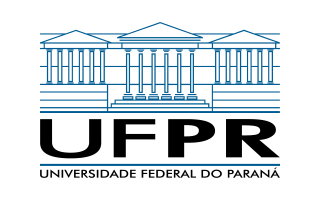
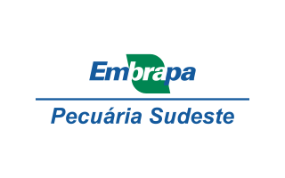
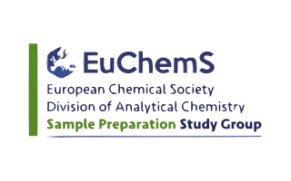

Vínculos e Experiência Profissional
Vínculo institucional

Pesquisador de Pós-Doutorado
Programa de Pós-graduação em Química (PPGQ)
Coordenação de Aperfeiçoamento de Pessoal de Nível Superior (CAPES) Programa Institucional de Pós-Doutorado (PIPD)
Início:
2024 •
Término:
Em andamento

Pesquisador de Pós-Doutorado
Embrapa Pecuária Sudeste
Conselho Nacional de Desenvolvimento Científico e Tecnológico (CNPq) Instituto Nacional de Ciências e Tecnologias Analíticas Avançadas (INCTAA)
Início:
2023 •
Término:
2024
Associação
Sociedade Brasileira de Química (SBQ)
Membro associado efetivo
Site:
www.sbq.org.br/

EuChemS-DAC Sample Preparation Study Group and Network
Membro associado efetivo
Site:
www.sampleprep.tuc.gr
Revisor de Periódico
Advances in Sample Preparation - Elsevier (IF: 5.2)
Chinese Journal of Analytical Chemistry - Elsevier (IF: 1.2)
Ecletica Quimica - UNESP (IF: 0.81)
Environmental Chemistry Letters - Springer (IF: 15.0)
Environmental Geochemistry and Health - Springer (IF: 3.2)
Food Analytical Methods - Springer (IF: 2.6)
Food Chemistry - Elsevier (IF: 8.5)
Food Science and Technology International - SAGE Publications (IF: 1.8)
Green Analytical Chemistry - Elsevier (IF: 4.45)
Journal of Environmental Management - Elsevier (IF: 8.0)
Journal of Food Composition and Analysis - Elsevier (IF: 4.0)
Journal of the Iranian Chemical Society - Springer (IF: 2.2)
Microchimica Acta - Springer (IF: 5.3)
Sustainable Chemistry and Pharmacy - Elsevier (IF: 5.5)
Trends in Analytical Chemistry - Elsevier (IF: 11.8)